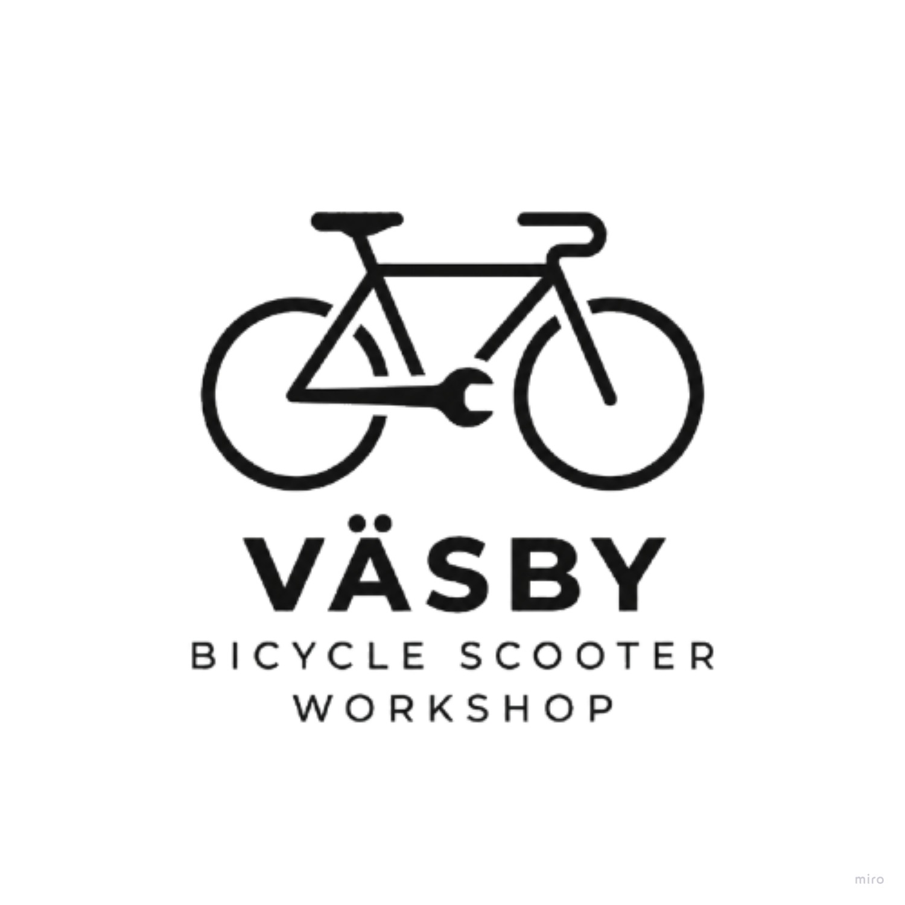
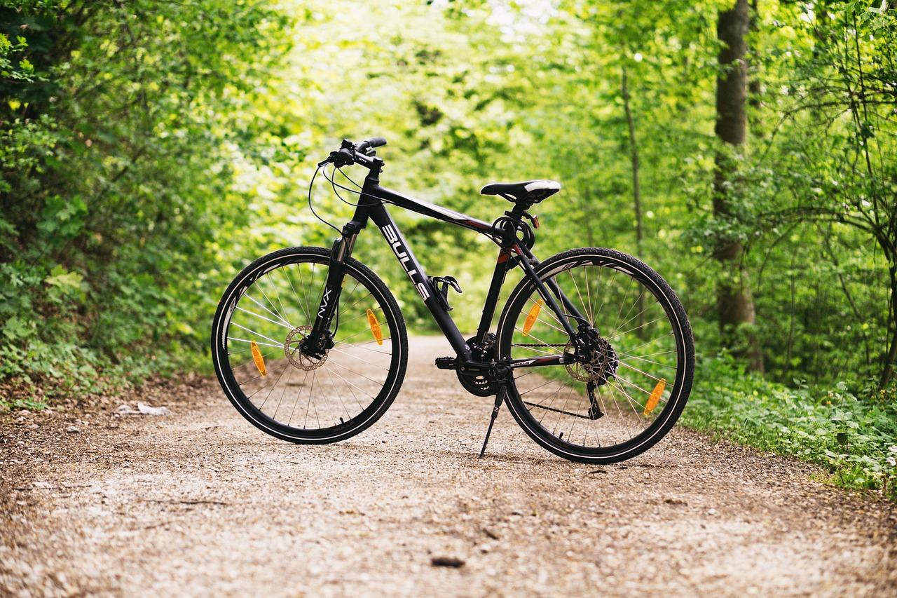
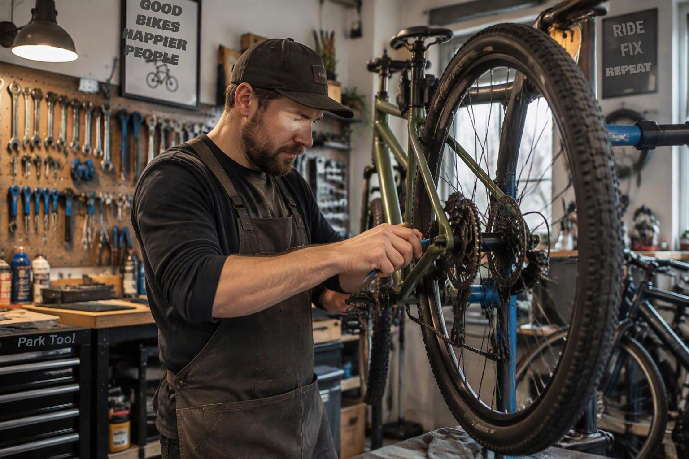

About Us
At Väsby Cykel, we are passionate about keeping cyclists on the move.
Based in Upplands Väsby, our workshop provides reliable repairs, maintenance, and expert service
for bicycles, e-bikes, and scooters, helping customers ride with confidence.
What We Offer

What We Offer, From tyre replacements and brake adjustments to complete service checks,
Väsby Cykel delivers professional workmanship and friendly customer service.
Our goal is simple: to keep your bike performing at its best so you can enjoy every ride.
